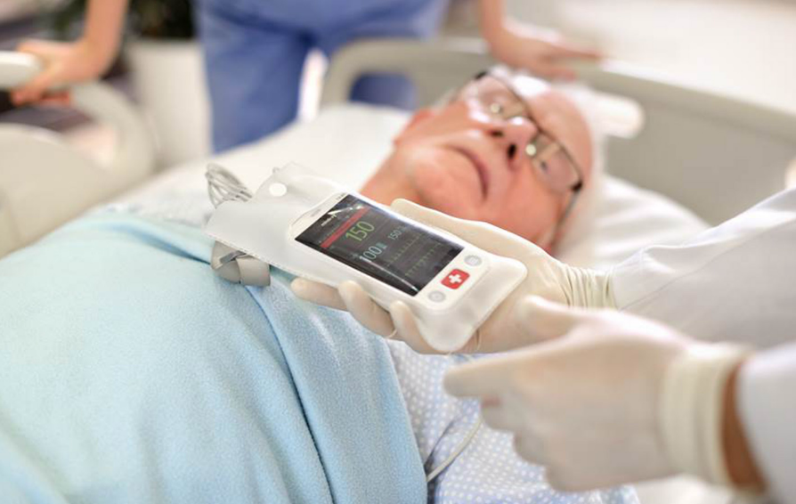

Holter Monitoring
Clinical findings are presented after the final report is generated. Typically used for frequent symptoms and short-term rhythm assessment.

Cardiac Monitoring Services
Specialized Medical provides a turnkey ambulatory cardiac monitoring program designed to help cardiology practices select, enroll, monitor, report, and follow patients through one coordinated workflow. The program supports traditional Holter monitoring, extended and long-term Holter monitoring, cardiac event monitoring, and mobile cardiac telemetry. Practices can use one partner for multiple test types while maintaining consistent staff training, patient support, reporting, and physician review processes.
Specialized Medical helps practices avoid fragmented workflows caused by using different vendors for different test types. One coordinated program can support short-duration Holter studies, longer recording periods, event-based monitoring, and mobile cardiac telemetry with in-progress clinical findings. The goal is to make test selection easier for the ordering provider while giving office staff a consistent process for patient enrollment, device setup, support, return, reporting, and physician review.
The S-Patch platform is positioned as the primary wearable option, with a lead-wire system available when a different configuration is clinically or operationally appropriate. The service is designed around practical office use: pre-enrollment is available, insurance information can be incorporated into the workflow when requested, and physician-ready reports can be reviewed and electronically signed through the portal.
Clinical findings are presented after the final report is generated. Typically used for frequent symptoms and short-term rhythm assessment.
Clinical findings are presented after the final report is generated. Typically used for intermittent symptoms requiring a longer recording window.
Qualifying clinical findings are presented during the test according to the prescribed notification protocol. Typically used for intermittent symptoms that may require patient or automatic event capture.
Qualifying clinical findings are presented during the test according to the prescribed notification protocol. Typically used for patients who may benefit from continuous remote rhythm surveillance.
Every Specialized Medical test provides LIVE test-status visibility while the study is in progress. Specialized Medical can see operational information such as battery level, electrode contact and signal quality, whether the monitor is communicating, and whether the patient appears to remain properly connected. When a parameter falls outside the expected range, Specialized Medical contacts the patient and works with the patient to correct the issue so the study has the best opportunity to be completed successfully. The distinction between test types is not whether the study is visible live; it is when clinical findings are presented. For Holter and Extended / Long-Term Holter, clinical results are presented after the final report is generated. For Event Monitoring and Mobile Cardiac Telemetry (MCT), qualifying clinical findings are presented while the test is in progress according to the prescribed notification protocol.
| Monitoring Type | Typical Duration | LIVE Test-Status Visibility | Clinical Findings Presented | Best Suited For |
|---|---|---|---|---|
| Holter Monitoring | 24–48 hours | Yes | After Final Report Is Generated | Frequent symptoms and short-term rhythm assessment |
| Extended / Long-Term Holter | 3–14 days | Yes | After Final Report Is Generated | Intermittent symptoms requiring a longer recording window |
| Cardiac Event Monitoring | Up to 30 days | Yes | During Test — According to Prescribed Notification Protocol | Intermittent symptoms that may require patient or automatic event capture |
| Mobile Cardiac Telemetry (MCT) | Up to 30 days | Yes | During Test — According to Prescribed Notification Protocol | Patients who may benefit from continuous remote rhythm surveillance |
The office workflow is built around three principal steps: Hook Up, Enroll, and Disconnect. Practices may pre-enroll patients days or weeks in advance so the in-office portion can be faster when the patient arrives. During enrollment, the office confirms the prescribed test, patient information, monitoring duration, notification instructions, and other requested information. At the end of monitoring, the device is disconnected or returned according to the selected workflow, and the completed report is prepared for physician review.
LIVE operational visibility on every study
While any test is in progress, Specialized Medical can monitor battery status, electrode contact / signal quality, device communication, and whether the patient appears connected — then contact the patient when corrective support is needed. Clinical-result timing differs: Holter and Extended / Long-Term Holter results are presented after the final report is generated, whereas qualifying Event and MCT findings are presented during the study according to protocol.
Specialized Medical provides staff training, implementation guidance, patient support, report delivery, and workflow assistance. The objective is not merely to supply a device. The objective is to provide a complete service that fits the practice’s clinical and operational needs.
The physician portal supports review and electronic signature of reports. Workflow details are configured to the practice, including which staff members enroll patients, how reports are routed, and how physician notification protocols are documented. See how this works for cardiology practices or across the broader category of ambulatory cardiac monitoring.

Differentiation is evidence-based: one coordinated platform, practical workflow design, live ECG visibility where prescribed, and reporting configured for physician review.


Specialized Medical supports Holter monitoring, extended and long-term Holter monitoring, cardiac event monitoring, and mobile cardiac telemetry through a coordinated ambulatory monitoring program.
The ordering provider selects the test based on the patient’s symptoms, expected event frequency, desired monitoring duration, and whether live remote rhythm surveillance is clinically appropriate.
All test types provide LIVE test-status visibility during the study so Specialized Medical can monitor battery level, electrode contact / signal quality, device communication, and whether the patient appears connected. The difference is the timing of clinical findings. MCT and Event Monitoring can present qualifying findings while the study is in progress according to protocol. Holter and Extended / Long-Term Holter clinical results are presented after the final report is generated.
Yes. Pre-enrollment can reduce the amount of work required while the patient is physically in the office.
Yes. The implementation workflow can be structured for multiple locations with consistent training, enrollment, support, and report routing.
Reports are made available through the physician workflow and can be reviewed and electronically signed according to the practice’s configuration.
No. The service provides diagnostic monitoring data and reporting support. Diagnosis and treatment decisions remain with the ordering physician.
The system is designed to reconnect and continue transmitting when connectivity becomes available. Exact behavior depends on the prescribed test, device, phone proximity, and network conditions.
Yes. Specialized Medical provides workflow and device training tailored to the practice.
Yes. Enrollment, report routing, physician review, and related administrative steps can be configured around the practice’s current workflow.
Specialized Medical can review the practice’s current ambulatory cardiac monitoring workflow, explain the available service options, and demonstrate how enrollment, monitoring, reporting, and physician review can be configured.
Prefer to talk? Speak With a Cardiac Monitoring Specialist — 1-855-SPEC-MED (1-855-773-2633)
Diagnostic Service Disclaimer: Specialized Medical provides ambulatory cardiac monitoring services and diagnostic information for review by qualified healthcare providers. The service does not replace physician judgment, emergency medical services, or instructions to call 911 when urgent symptoms occur.